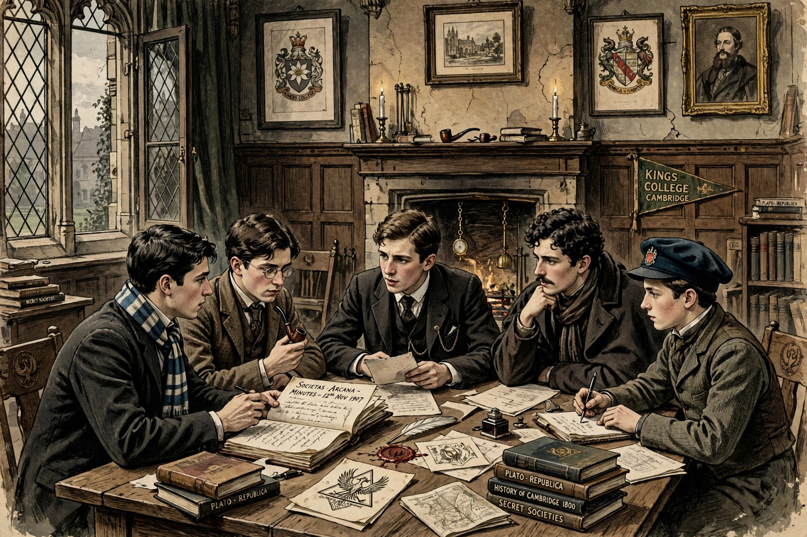

The Cambridge Apostles, also known as the Conversazione Society, is an intellectual secret society at the University of Cambridge, founded in 1820.
| Cambridge Apostles | |
|---|---|
 | |
| Founded | 1820 |
| Type | Intellectual discussion society |
| Location | Cambridge, England |
The society was founded by George Tomlinson, later Bishop of Gibraltar, and took its nickname from its original twelve members. Members, drawn mainly from King's, St John's and Trinity colleges, meet to discuss philosophical and moral questions, reading papers in an atmosphere of frankness influenced in the early 20th century by G. E. Moore's Principia Ethica.
Apostles have included Alfred Tennyson, Bertrand Russell, G. E. Moore, Ludwig Wittgenstein (briefly), John Maynard Keynes, Lytton Strachey and other figures of the Bloomsbury Group, the physicist James Clerk Maxwell, and — notoriously — the spies Guy Burgess and Anthony Blunt. Election is by invitation and membership was traditionally secret.
Recreated from memory.